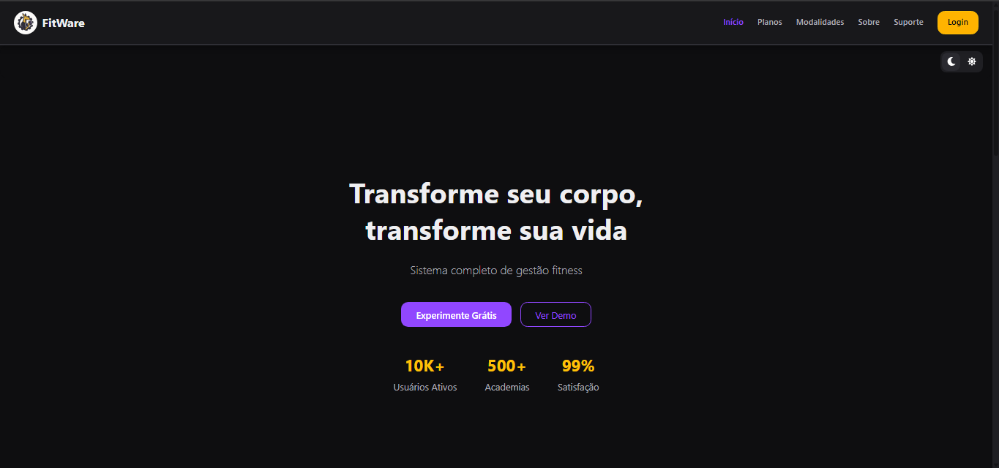
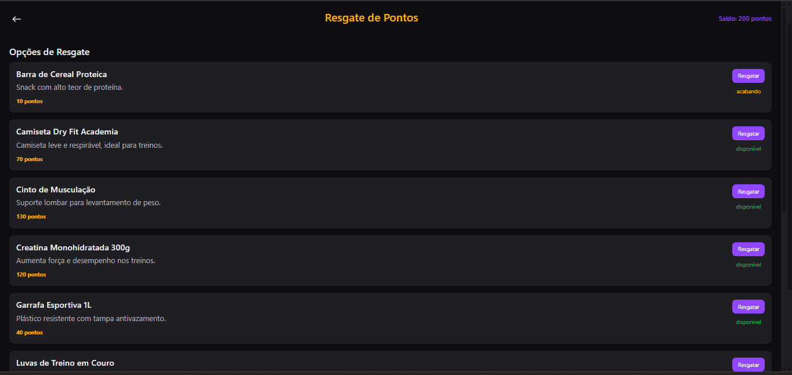
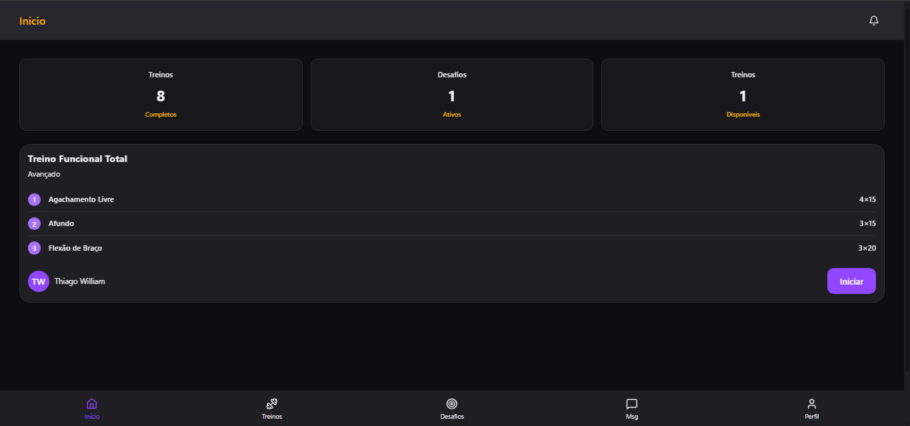
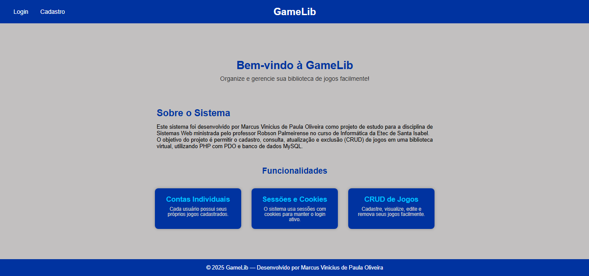
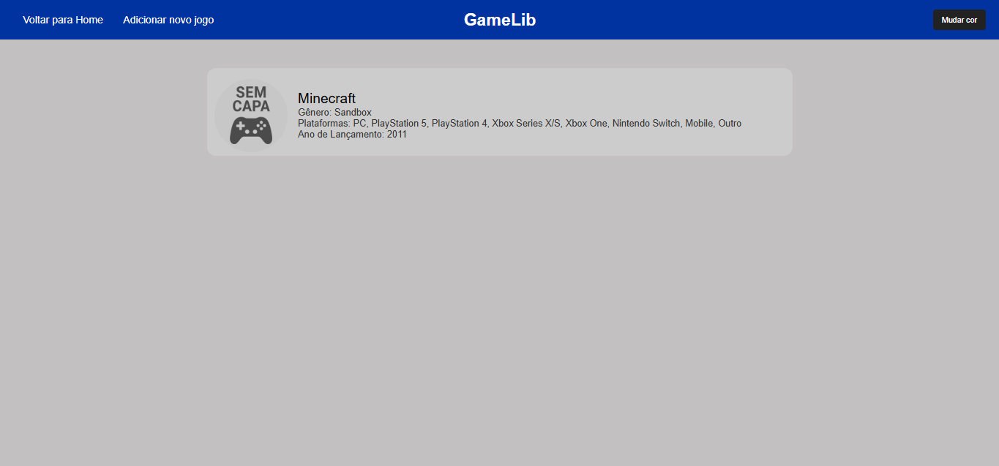
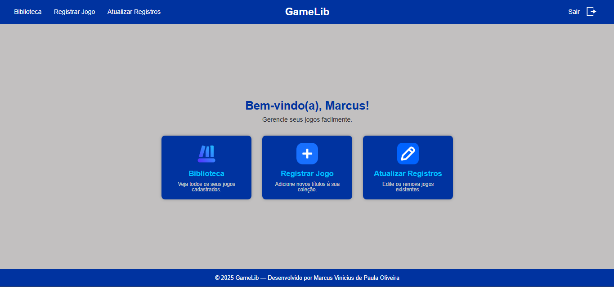

Desenvolvedor em Formação
Estudante de Análise e Desenvolvimento de Sistemas, com foco em desenvolvimento back-end, APIs e bancos de dados.
Currículo profissional
Confira minha formação, experiências e habilidades em desenvolvimento.
Análise e Desenvolvimento de Sistemas – Cursando (2º semestre) FATEC de Mogi das Cruzes – Centro Paula Souza | Início Fev/2026
Ensino Médio Integrado ao Técnico em Informática para Internet ETEC de Santa Isabel – Centro Paula Souza | Fev/2023 – Dez/2025
O FITWARE é uma aplicação web desenvolvida para centralizar a gestão de alunos, professores, treinos e pagamentos em academias, reunindo funcionalidades administrativas em uma única plataforma.



Atuei principalmente no desenvolvimento e na integração do backend do FITWARE, com foco no sistema de pontuação dos alunos, persistência de dados, autenticação e segurança.
criação e mapeamento dos models a partir do esquema relacional, além da integração e dos ajustes necessários para garantir a comunicação entre a aplicação e o PostgreSQL.
implementação da verificação de autenticação utilizando JWT e controle de permissões baseado em roles, protegendo rotas e restringindo operações conforme o perfil do usuário.
desenvolvimento do sistema de pontos, resgates de recompensas e desafios, incluindo a lógica de cálculo de pontos, regras de resgate e integração com o banco de dados.
desenvolvimento de alertas e avisos para informar os usuários sobre eventos e atualizações relevantes do sistema.
O GameLib é uma plataforma desenvolvida para organizar uma biblioteca pessoal de jogos, permitindo que os usuários acompanhem títulos, cataloguem novos favoritos e acessem informações relevantes de forma simples e intuitiva.



email: marcus.profissional.dev@gmail.com
Telefone: (11) 9 3536-6977